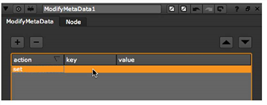

有几种方法可以修改中的元数据 核武器 .
| 1。 | 选择 元数据 > ModifyMetaData 在要向其添加新键的元数据的节点后插入 ModifyMetaData 节点。 |
| 2. | 在 ModifyMetaData 控件中，单击加号 ( + ) 按钮。占位符出现在元数据框中。 |
| 3. | 双击下面的占位符 关键 . |

的 拾取元数据键 对话框打开。
| 4. | 在对话框底部的字段中，输入要添加到元数据中的新密钥的名称。单击 好 . |
| 5. | 双击下面的占位符 数据 并输入新密钥的值。 |
新键及其值将添加到正在传递的元数据中。
| 1。 | 选择 元数据 > ModifyMetaData 在要编辑其元数据的节点后插入 ModifyMetaData 节点。 |
| 2. | 在 ModifyMetaData 控件中，单击加号 ( + ) 按钮。 |
占位符出现在元数据框中。
| 3. | Double-click on the placeholder under key . |
的 拾取元数据键 对话框打开。
| 4. | 选择要编辑其名称或值的键，然后单击 好 . |
该键将添加到 ModifyMetaData 属性中。
| 5. | 在 ModifyMetaData 属性中，双击键或其值，并根据需要编辑信息。 |
| 1. | Select MetaData > ModifyMetaData to insert a ModifyMetaData node after the node whose metadata you want to edit. |
| 2. | 在 ModifyMetaData 属性中，单击加号 ( + ) 按钮。将占位符添加到元数据列表中。 |
| 3. | 双击下面的占位符 行动 并选择 移除 从打开的菜单中。 |
| 4. | 双击下面的占位符 关键 . |
The Pick metadata key dialog opens.
| 5. | 从现有键的列表中，选择要删除的键，然后单击 好 . |
节点现在从元数据中删除选定的键，您可以在输出中查看元数据。
• 要执行新操作，请单击加号 ( ) 按钮。
• 要取消现有操作，请从列表中选择它，然后单击减号 ( - ) 按钮。请注意，这只会影响 ModifyMetaData 操作，不会从嵌入在输入图像中的元数据中删除键。
• 要在列表中向上移动项目，请选择该项目并单击向上箭头按钮。
• 要在列表中向下移动项目，请选择该项目并单击向下箭头按钮。
|
|